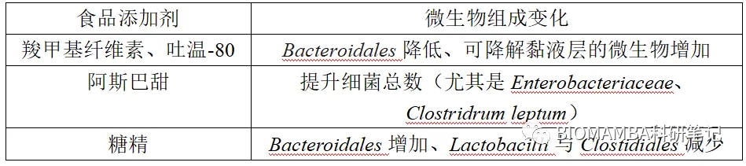
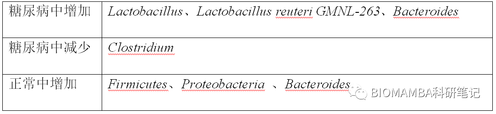

一文掌握人类肠道微生物的代谢网络与疾病关联
原文：https://mp.weixin.qq.com/s?__biz=MzAwMzIzOTk5OQ==&mid=2247497007&idx=1&sn=080b205408c5c2f1eaddadb48d7f2db4&chksm=9b3c8c7fac4b056939612af5f5fcb984afbe38e6308a23729c06c4722beac103c5951a5f60c8#rd 合集：文献速递
写在前面
本文译自一篇2019年发表于《MICROBIOLOGY》的文献，笔者稍加整理，权当一篇文献解读的笔记吧。首先不得不承认的是，目前关于微生物与疾病之间相互关联的研究与文献数量逐年攀升，并且也确实有一些证明二者确切关系的发现。这篇文章即是对目前肠道微生物对人体代谢网络的影响从而造成的各类疾病的关系做了详尽的综述，也为其他学者的后续研究提供了一定的思路。
一、摘要
在介绍种类数量巨大的肠道微生物究竟与各类疾病有何关系之前，我们有必要了解一个前提，就是我们为何将目光锁定在肠道微生物。这是由肠道的一系列特点所决定的：首先，消化道是人体表面积最大的结构，约有
30-40m 2，不难发现这是一个相当大的数字，正是如此之大的表面积为微生物的定殖提供了可能。另一方面，由于pH值的差异，消化道中的不同部位微生物的种类与丰度有所差异，其中肠道微生物的丰度较高，而肠道的不同部位微生物的种类与丰度也会有所不同（其中大肠微生物的丰度较高，可达
1012CFUml-1；小肠上端较少，可达104CFUml-1），一般认为结肠和远端肠道中的微生物丰度最高 。此外，肠道作为人体吸收营养物质的来源，这一部位的微生物代谢产生各种物质相较体表而言无疑更易于进入人的体内。
二、肠道微生物与疾病
目前发现与肠道微生物相关的疾病有：肥胖、T1D（I型糖尿病）、T2D（II型糖尿病）、粥样动脉硬化、肝硬化、癌症等，接下来我们就从影响因素、疾病两个角度来具体介绍。●（一）影响因素
目前普遍认为人体自身的基因、营养状态、生活方式会对微生物的组成造成影响，而微生物组成的变化 会进一步影响肠道中的代谢变化 （如糖与氨基酸代谢生成SCFA-短链脂肪酸，脂质代谢、蛋白质降解、维生素合成等）从而引起一些与代谢相关的疾病。
●1 、基因其实这一点算是意料之外、情理之中，肠道微生物的组成的确会受到基因的影响。最有力的证据便是研究表明同卵 双胞胎之间肠道微生物的相似度大于异卵 双胞胎，双胞胎均在相同的环境中成长，而前者基因型相同后者基因型不同，此间关系不言自明。除了基因之外，BMI不同的人其肠道微生物的组成一般也不同。在遗传因素对肠道微生物的影响这一方面，另有研究发现细菌中的 Christensenellaceae 和 archaeal methanogens 遗传性较高。凡事都有两面性，除了基因对肠道微生物的组成有影响之外，微生物同样也会对宿主的肠道细胞基因表达产生一定的影响，最终导致一些关于代谢、免疫、物质转运（如GST）、激素信号通路相关的基因表达产生影响。● 2、饮食（1）营养物质： 这一影响因素是最直接的，宿主摄入的食物在消化道中降解、消化，营养物质除了进入人体外的唯一去向便是肠道微生物，因此饮食结构是一个值得强烈关注的变量，下表为各类饮食带来的影响。
此外，高脂饮食还会引起白色脂肪组织 （大家可以认为这是一种对人体不利的脂肪组织）的增多、免疫激活与胰岛素抵抗。另有研究发现，西方的高脂肪酸组成的饮食会导致Toll样受体的表达，并进一步改变肠道屏障的通透性，从而提高体内炎症水平。（2）食品添加剂： 食品添加剂有很多种类，其化学本质与在食品中的作用也多种多样，这里我们列举几种使用频次较高的。下表为几种食品添加剂对微生物丰度的具体影响：

羧甲基纤维素的摄入会使导致黏膜破坏 的细菌含量上升，甚至导致肠道上皮的粘液层厚度减半。在一项无法在无菌小鼠中重现的实验中，羧甲基纤维素的摄入使丁酸的含量减少（丁酸可以降低体内炎症反应），从这一角度而言的确是羧甲基纤维素的摄入影响了微生物组从而进一步影响丁酸的含量。此外还发现LPS、鞭毛蛋白的含量会同时上升，而这些成分有助于微生物的运动与渗透，伴随着我们提到的粘液层变薄，更多的鞭毛蛋白、LPS也会进入宿主体内从而引起宿主炎症或免疫反应 进一步影响微生物的组成。阿斯巴甜的摄入会导致糖类摄取相关基因的表达量增加，促进丙酸盐的产生（丙酸盐可以刺激糖异生，增加胰岛素敏感性）。糖精摄入后导致的微生物组成变化与T2D十分类似，并且该种变化可以在体外重现，即糖精可以直接与微生物发生互作。不难看出，羧甲基纤维素与糖精在某种程度上对身体是有害的，而阿斯巴甜对人体有一定的增益作用。
（3）抗生素： 相较于其他影响因素而言，抗生素对微生物的作用是最显著、最直接的。如头孢的使用可以在短期内造成微生物群落的改变，最终导致高碳水化合物、低SCFA的环境，并有助于病原微生物 Clostridium difficile 的定殖。万古霉素与新霉素敏感的微生物中包含可以产生SCFA的革兰氏阳性菌及益生的 Firmicutes ，因此二者作用的结果类似于糖尿病早期患者所呈现的肠道状态。在使用万古霉素治疗心内膜炎的临床案例中，持续六周的静脉注射会导致病人的体重升高（这一点最好的应用就是在家畜养殖时通过喂养低剂量的抗生素以提高体重）
● 3、宿主体型
不同于前两类因素，宿主的体重是一种具体的影响因素，由于其影响力巨大，这里单独列出来叙述。
在一项以丹麦人为对象的试验中，结果显示肥胖者（169例）的肠道微生物基因数仅为380000~480000，而瘦者（123例）可达640000，这一数据佐证了，健康/者的肠道微生物丰度大于处于疾病状态下/肥胖者的肠道微生物丰度。但也并不总是如此，也存在一些在肥胖者体内丰度增加的微生物如 Proteobacteria 、 Bacteroidetes 会在肥胖者体内上升。此外另有一些的微生物会与特定的宿主状态相绑定，如 Mucor 属在不肥胖受试者体内存在，并且肥胖者在减重后该属的微生物丰度会增加；如肥胖者的 Bacteroidetes 减少、 Firmicutes 增加。值得一提的是，微生物对体重的影响，是可以独立于饮食结构而起作用的。此外，肠道微生物还受地理、气候、温度等因素影响，这里不再一一列举。● （二）微生物与代谢**● 1、SCFAs（短链脂肪酸）：**SCFA多是一些多糖的代谢产物，可以为有机体提供能量，并且可以作为胆固醇、长链脂肪酸、糖异生的前体物质。此外，SCFA还可以作为信号分子影响染色质的乙酰化水平从而进一步影响宿主肝脏和骨骼肌中的脂质和血糖水平及宿主的免疫状态。因此SCFA的监控是肠道微生物代谢组研究中的一个重要对象， Firmicutes 与 Bacteroidetes 发酵产生的SCFA占人体摄取总量的70%。
作为SCFA的一种，丁酸盐可以调节封闭蛋白（daudin 1）、粘蛋白mucin及其他紧密连接蛋白的表达。这些蛋白对于肠屏障的完整性至关重要，可以减少发生内毒素血症的风险，降低人体炎症水平。
作为SCFA的乙酸盐、丙酸盐、丁酸盐可以进一步刺激白色脂肪组织、胰岛 α 、 β 细胞及炎症反应相关细胞上的GPR41、GPR43受体从而与结肠炎、哮喘、关节炎等疾病相关。其中GPR43与肥胖的发生密切相关，其可以起到抑制胰岛素依赖性脂肪的积累的作用。有研究表明，GPR43的缺失导致小鼠更易肥胖，GPR43过表达会使小鼠较野生型而言更瘦。在老鼠与人体中，GPR41的激活可以导致瘦素、pancreatic peptide tyrosine tyrosine（PYY）的分泌量上升从而控制体重。
SCFA（如乙酸盐、丁酸盐）可以促进PYY与glucose-dependent insulinotropic peptide（GLP-1）的分泌，即使在高脂饮食下也能够提高小鼠的糖耐量水平、促进糖异生并抑制体重的增加。
当然，科学的世界并没有绝对 ，SCFA的过量也会引起相关的代谢疾病，并涌向肝脏生成脂质。
**● 2、脂质代谢：**将 E.dolichum 从肥胖者体内转移至正常健康鼠体内，会引起后者的脂肪生成增加，从中不难看出肠道微生物与人体脂质代谢与吸收之间密切相关，脂质代谢对于人体的重要程度也无需赘述。
微生物影响脂质代谢有如下机制：
（1）吸收： 微生物影响脂质吸收的原理在于其可以改变回肠处的胆汁酸代谢。如以 Lactobacillus 与 Bifidobacteria 为代表的微生物可以产生胆汁酸水解酶降解肠道中的胆汁酸。学过生化的同学应当了解，胆汁酸在肠道中可以作为表面活性剂促进脂质的乳化形成乳滴以增加与脂肪酶的接触面积，这是有利于脂质吸收的。简而言之， Lactobacillus 与 Bifidobacteria 可以抑制人体脂质的吸收。
（2）分解与氧化： 在一项实验中，由于肝脏、肌肉中的氧化磷酸化水平与AMPK（可以刺激脂质分解与脂肪酸氧化）水平的提升，即使是在肥胖饮食下的无菌小鼠，其肥胖的概率也会下降。
（3）作为信号分子： 与SCFA一样，微生物也会代谢产生有信号分子作用的脂质来影响宿主代谢。如NAPEs （N-磷脂酰乙醇胺）是一种食欲抑制剂，体内产生的NAPEs可以在下丘脑初聚集发挥调节食物摄取和减少肥胖、胰岛素抵抗程度和肝部脂肪聚集的作用。但高脂的饮食会抑制NAPEs的形成，为了应对这一现象，已有动物实验证明，使用可以合成NAPE的 E.coli 喂养C57BL/6J小鼠后，其在肥胖饮食下的体重稳定能力比正常组更强，肥胖率也更低，这一作用可以维持约四周。
三、微生物代谢与疾病
● （一）癌症癌症的发病原因比较复杂且多种多样，这里我们讨论与微生物关联最大的结直肠癌。目前已有发现一些特定的微生物与结直肠癌存在关联，如 Bacteroides fragilis 可以产生能够破坏DNA的基因毒素从而与癌症的发生相关联。此外， Fusobacterium nucleatum , Porphyromonas asaccharolytica, Parvimonas micra, Prevotella intermedia, Alistipes finegoldii and Thermanaerovibrio acidaminovorans 也普遍存在与结直肠癌与腺体瘤中。●（二）糖尿病终于到了笔者最关心的部分，这一模块有必要好好介绍一番。笔者已经介绍了肠道微生物的影响因素以及此后带来的代谢改变，这一系列的蝴蝶效应最终会导致糖尿病的患病率上升。越来越多的证据表明一些参数（如BMI）已经不能在衡量T2D的指标中起到明显的代表作用，因此肠道微生物的测评是一项重要的指标。
T2D的发病与代谢之间的联系较T1D更加的紧密，因此我们这里着重介绍T2D。在一项对368名T2D中国患者的肠道微生物进行宏基因组分析的试验中，通过对肠道微生物标记物的分析发现代谢的中度失调与丁酸产生菌（如 Roseburia and Faecalibacterium , Eubacterium and Clostridiales sp. ）的减少和非丁酸产生菌（如 Haemophilus parainfluenzae ）增加有关（关于丁酸我们已经提到，其可以降低炎症反应并提高胰岛素敏感性）。宏基因分析结果显示，微生物群中基因数的变化如下表所示，表明体内存在低程度的炎症且肠道微生物的自卫机制被激活。
肠道微生物与糖尿病发病的重要机制之一便是会影响肠道屏障的厚度，已有研究表明这可能是因为降解降解粘蛋白的格兰仕阴性菌在此间发挥了一定的作用。在肠道微生物群从宿主获得得能量减少时，它们就可能会分解粘蛋白以获得能量、糖分与氮元素（如 A. muciniphila ）。当然，肠道中也会存在一些粘液层的“守护者”，比如 A. muciniphila 通过产生乙酸和丙酸使其他肠道微生物获益并保护粘液层，从而起到降低体内炎症水平、降低内毒素血症风险、保护人体肠道与代谢健康的作用。糖尿病与正常对象体内的微生物差异如下表所示。

目前的发现不仅局限于发病过程中肠道微生物的变化，T2D的的药物治疗与肠道微生物也会存在一定的关联。以最常用的降糖药——二甲双胍为例，其在肠道粘膜处的浓度比血药浓度水平高了约300倍，显然这是一个夸张的数字，为其改变肠道微生物组成打下了基础。通过二甲双胍的治疗可以提升肠道内 Akkermansia 的丰度与活性并提升 Bacteroidetes 与 Firmicutes 之间的比例，总的来说便是可以一定程度上逆转高脂饮食与糖尿病带来的改变。除了影响微生物之外，二甲双胍也同样能够促进杯状细胞的增殖以维持肠道屏障的完整性，降低体内的炎症水平（如减少脂肪组织中IL-6与IL-1β的水平）与氧化水平。
● （三）动脉粥样硬化
这是一种慢性的血管疾病，这一疾病的发生与我们上文提到的脂质代谢的异常相关。已有研究发现 Firmicutes Veillonella 、 Streptococcus 、 Chlamydia 等微生物在该疾病的发病过程中密切相关，这不是笔者的研究领域，因此不做过多介绍。
四、针对微生物的治疗方法
既然我们已经明确的找到了一些与疾病有相关性的微生物，那么从应用的角度上来说，我们也可以以微生物作为靶点去有针对性的治疗一些疾病。文章中提到一些肥胖外科手术（如胃切手术、胃垂直袖状旁路手术、腹腔镜袖胃切除术）能够更改肠道微生物并控制体重。但是很显然，手术控制了体重是因，肠道微生物的改变是果，为了肠道微生物的改变从而采取手术的方法明显是不划算的。因此，使用抗生素、服用益生菌及粪便/肠道微生物移植的方法比较值得提倡。值得大家关注的是运动是一个能够使肠道微生物组成发生有益改变的有效方法，合理的运动是影响肠道微生物可塑性的环境因素之一。随之而来的效应也会引起SCFA产生菌增加、保护肠道粘膜的完整性等。
五、总结
我就不总结了，其实文章的封面就是最好的总结。
参考文献：
DOI：10.1099/mic.0.000853

如何联系我们
 公众号后台消息更新不及时，超过48h便不允许回复读者消息，这里给大家留一下领取资料、免费服务器的微信号 ，方便各位随时交流、提建议(科研任务繁重，回复不及时请见谅)。此外呼声一直很高的交流群 也建好了，欢迎大家入群讨论：永久免费的千人生信、科研交流群
公众号后台消息更新不及时，超过48h便不允许回复读者消息，这里给大家留一下领取资料、免费服务器的微信号 ，方便各位随时交流、提建议(科研任务繁重，回复不及时请见谅)。此外呼声一直很高的交流群 也建好了，欢迎大家入群讨论：永久免费的千人生信、科研交流群
大家可以阅读完这几篇之后添加给生信入门初学者的小贴士 如何搜索公众号过往发布内容

 您点的每个赞和在看，我都认真当成了喜欢
您点的每个赞和在看，我都认真当成了喜欢